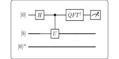

Algorithms / 算法 | 难度：高级 | 预计时间：25 分钟
HHL 算法用于求解线性方程组 \(Ax=b\)，提供指数加速。
经典算法（如高斯消元）需要 \(O(N^3)\) 时间
对于大规模稀疏矩阵，经典方法效率低
HHL 算法需要 \(O(\text{poly}(\log N))\) 时间
对于稀疏矩阵，提供指数加速
是量子机器学习的基础
线性方程组求解
量子机器学习
量子模拟
from quonic.algorithms import hhl
# Solve Ax = b
A = [[1, 0], [0, 2]]
b = [1, 1]
result = hhl(A, b)
print(f"Solution: {result.x}")预期输出：
Solution: [1.0, 0.5]
HHL 算法求解 \(Ax=b\)： \[\begin{equation} |x\rangle = A^{-1}|b\rangle \end{equation}\]
算法步骤：
用 QPE 估计 \(A\) 的本征值
用受控旋转将本征值取倒数
用逆 QPE 恢复量子态
测量得到解 \(|x\rangle\)
复杂度： \[\begin{equation} O(\text{poly}(\log N) \cdot \kappa^2 / \epsilon) \end{equation}\]
其中 \(\kappa\) 是条件数，\(\epsilon\) 是精度。
HHL 算法在量子态空间中操作，通过 QPE 将矩阵对角化，然后取倒数得到解。
from quonic.algorithms import hhl
# hhl(A, b)
# A: coefficient matrix
# b: right-hand side vector
result = hhl(A, b)
# result.x: solution vector
# result.condition_number: condition number of A
print(f"Solution: {result.x}")# Different matrices
A1 = [[1, 2], [3, 4]]
b1 = [1, 0]
result1 = hhl(A1, b1)
A2 = [[1, 0, 0], [0, 2, 0], [0, 0, 3]]
b2 = [1, 1, 1]
result2 = hhl(A2, b2)HHL 算法可以高效求解大规模稀疏线性方程组。
HHL 算法是量子机器学习的基础组件。
指数加速：\(O(\text{poly}(\log N))\) vs \(O(N^3)\)。
HHL 算法需要矩阵是稀疏的，且条件数不能太大。
量子相位估计（QPE）
量子傅里叶变换（QFT）
线性代数
量子机器学习
量子模拟
量子优化
from quonic.algorithms import hhl
A = [[1, 0], [0, 2]]
b = [1, 1]
result = hhl(A, b)
print(f"Solution: {result.x}")